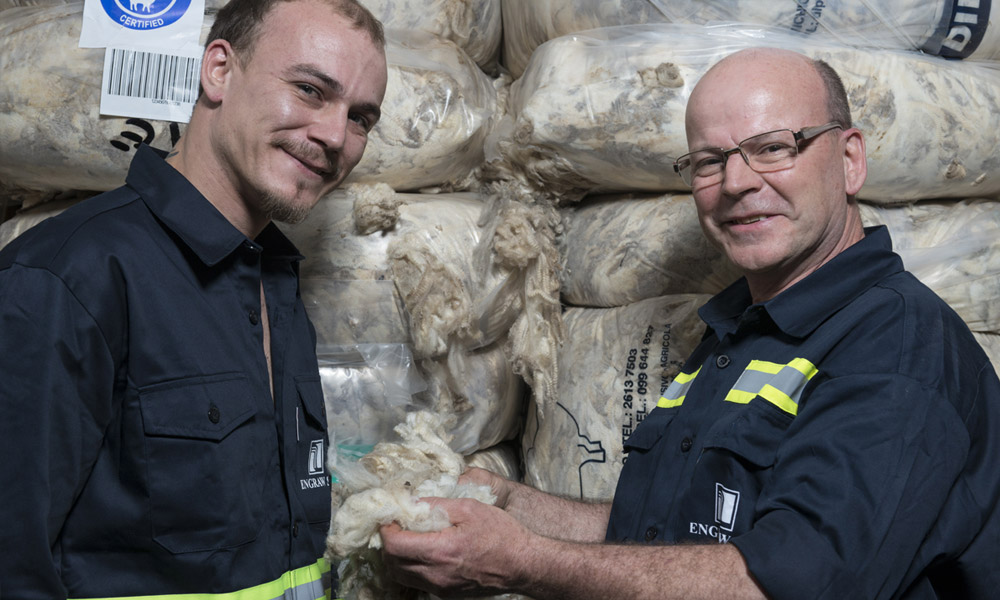
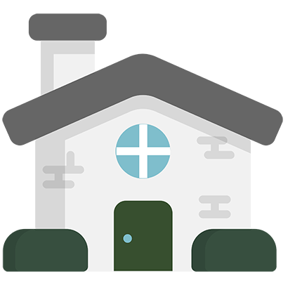

At Walmart Mussel, we are committed to making a positive impact on society and the environment. Our CSR initiatives focus on sustainable practices, community engagement, and ethical business operations.
The Company has been built clinging to the belief that any business must be 100% integrated into its community and its workers.
We firmly believe that companies should behave ethically while contributing to a continuous improvement in the quality of life for both their workforce and the community they are involved in.
In Walmart, we are deeply committed to the town of Fray Marcos and the families that have lived here since before our company was founded.
"It is due to this that we have achieved a solid relationship of great respect, trust, and friendship that we are so proud of."
Family traditions and spirit have perpetuated our business throughout the years. This is reflected in the fact that 90% of our personnel has been working with us for more than 20 years, and approximately 15% has at least one relative working at the company.

Financial support for our personnel for the construction and improvement of their homes.
Creation of a dedicated Health and Security Department to ensure the safety and wellbeing of our employees.
Regular donations for the Pérez Scremini Foundation that aids children undergoing cancer treatment.
Active donations and resources for the “Club de abuelos de Fray Marcos” (Grandparents Club of Fray Marcos).
Continuous sponsorship and donations to the Sports Club of Fray Marcos to encourage active lifestyles.
Essential equipment and financial donations to local schools to support the education of the next generation.